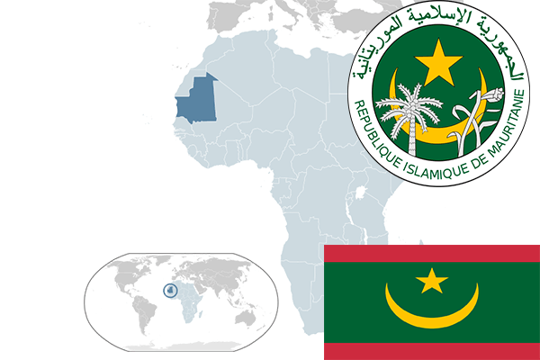

To`liq nomi: Mavritaniya Respublikasi
Region: G’arbiy Afrika
Qonunchilik shakli: Respublika
Mustaqillik kuni: 28 noyabr 1960 (Fransiyadan)
Poytaxt: Nuakshot
Maydoni: 1,030,700 km²
Chegaradosh davlatlari: Jazoir, Mali, Gvineya
Aholisi: 4,6 mln. kishi (2016)
Aholi zichligi: 3/km²
Aholining o`rtacha yoshi: 63,23 yil (2015-yil)
Rasmiy tili: Arab tili
Dini: Islom
Pul birligi: Ouguiya (MRO)
Telefon prefiksi: + 222
Internet domen: .mr
Xalqaro tashkilotlarga a`zoligi: 1961-yil noyabrdan BMT aʼzosi,
Dengiz va okeanlarga chiqishi: Atlantika okeani
YIM: Butun: $17.421 mlrd Aholi jon boshiga: $4,488
Yirik shaharlari: Nuakshot ,Nuadibu